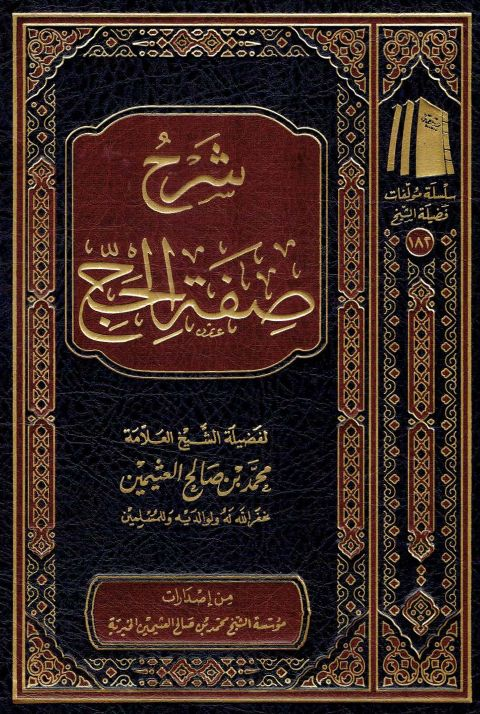

شرح صفة الحج
Authors: محمد بن صالح العثيمين
Publishers: مؤسسة الشيخ محمد بن صالح العثيمين الخيرية
Download Downloads need an internet connection.
- Published
- 1443هـ 2022م
- Country
- القصيم، السعودية
- Edition
- 1
- Volumes
- 1
- Pages
- 265
- Type
- ماجستير
- Category
- الفقه وأصوله
Description
**▫️ العنوان: شرح صفة الحج** ▪️ المؤلف: #محمد_بن_صالح_العثيمين ▫️ الناشر: #مؤسسة_الشيخ_محمد_بن_صالح_العثيمين_الخيرية ▪️ تاريخ النشر: 1443هـ 2022م ▫️ بلد النشر: القصيم، #السعودية ▪️ الطبعة: 1 ▫️ عدد الأجزاء: 1 ▪️ الصفحات: 265 ▫️ نوع الوعاء: #ماجستير ▪️ التصنيف الرئيسي: #الفقه_وأصوله ۪